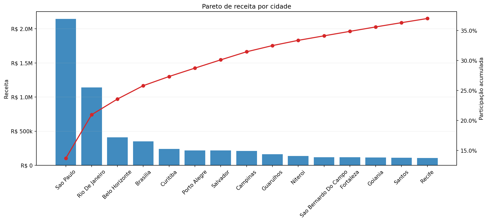
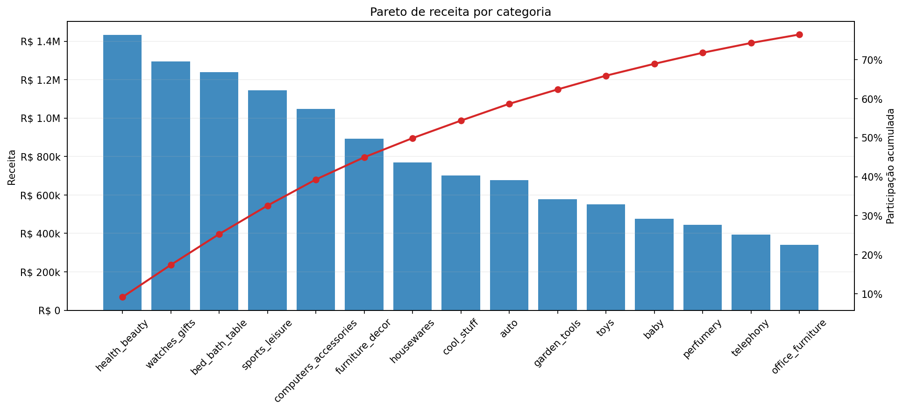
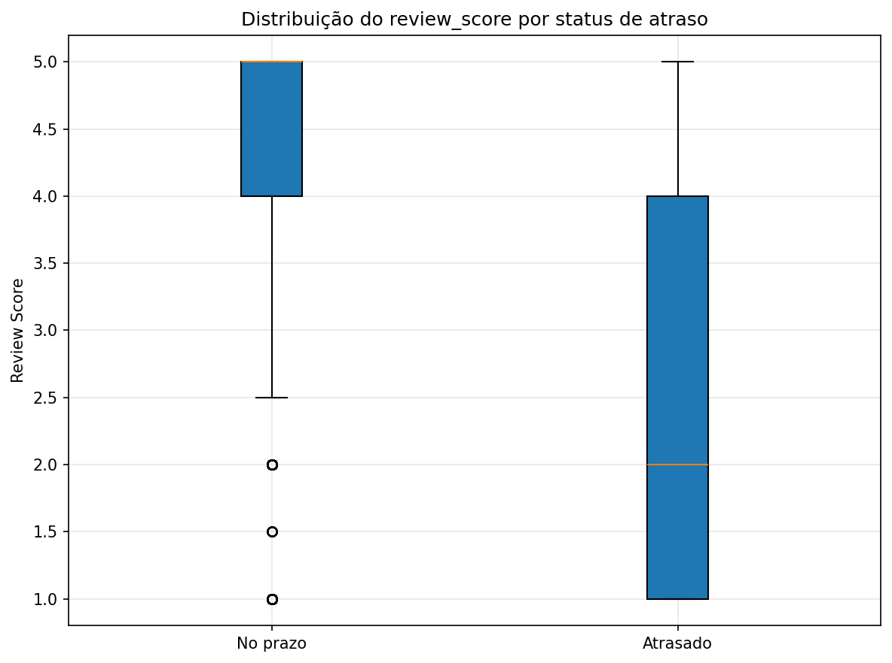
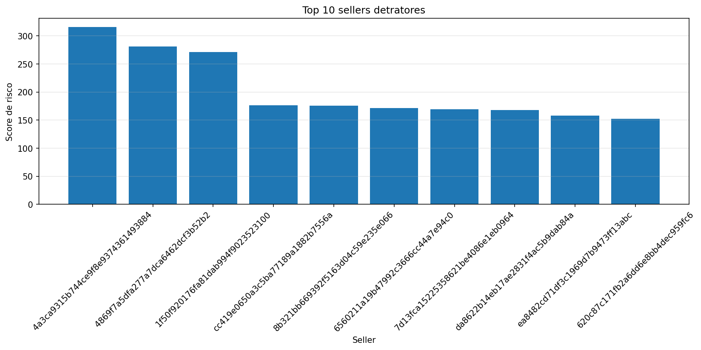
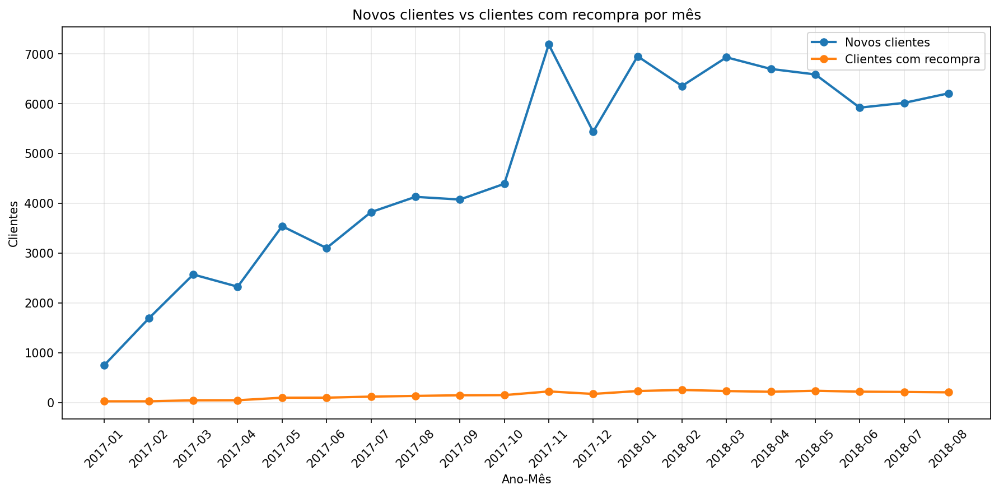
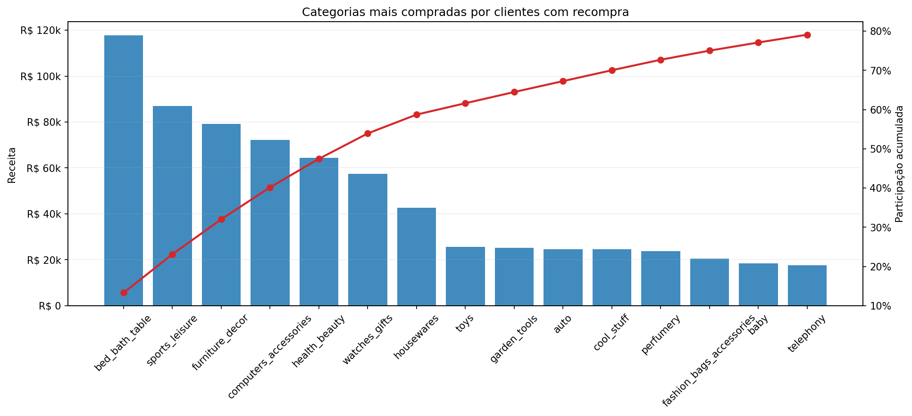

Crescimento com concentração,
fricção logística e alavancas de captura de valor
Uma leitura executiva para mostrar onde a Olist cria valor, onde perde valor e quais movimentos parecem mais defensaveis para sustentar expansao futura.
Tese central do projeto
A Olist cresceu, mas de forma concentrada; o principal fator de erosão de valor está na logística; e o maior potencial de ganho futuro está em ampliar sellers estratégicos com apoio de retenção e disciplina operacional.
A narrativa foi estruturada com validação estatística complementar para sustentar a tese central com evidências defensáveis, linguagem executiva e foco em decisão.
O que esta apresentacao responde
- Onde o crescimento comercial se concentra e por que isso importa.
- Como o atraso logístico afeta satisfação e destrói valor percebido.
- Quais sellers e quais frentes merecem prioridade executiva.
Principio de leitura
- Usar linguagem de associacao, nao de causalidade.
- Levar para a defesa principal apenas graficos coerentes com a tese e de facil sustentacao.
- Tratar cenários como leitura orientada por hipóteses de negócio, e não como previsão exata.
Base tratada para refletir a mesma lógica principal do painel executivo
O recorte estatístico foi alinhado para evitar ruído de meses muito iniciais, usando apenas a janela principal de 2017 a agosto de 2018 e excluindo cancelados e indisponíveis.
Mensagem do slide: a análise usa uma camada estatística complementar para testar consistência, reforçar evidências relevantes e reduzir o risco de conclusões apressadas.
Regras principais do recorte
Jan/2017 a Ago/2018
Meses anteriores a 2017 foram retirados para evitar distorção de leitura e ficar mais aderente ao painel principal.
Base comercial tratada
Pedidos cancelados e indisponiveis foram excluidos da camada principal.
Meses residuais
O ultimo mes incompleto ficou fora da serie mensal principal para evitar ruido.
Como a validação estatística apoia a narrativa
Evidencias robustas
Pareto de concentração, testes de diferença, boxplot de satisfação, ranking de sellers detratores e leitura de recompra em linguagem executiva.
Leituras complementares
Leituras multivariadas e cenários entram apenas como apoio técnico de consistência, sem protagonismo na narrativa principal e sem afirmação de causalidade.
O crescimento existe, mas esta concentrado em poucos polos e categorias
Os dados sugerem tracao comercial real, mas com dependencia relevante de grandes centros urbanos, categorias lideres e um grupo restrito de sellers.
Leitura executiva: a Olist ganhou escala, mas o valor nao esta pulverizado. Isso reforca oportunidade de expansao seletiva e tambem evidencia dependencia de poucos motores de crescimento.
Pareto de receita por cidade

Grandes centros, especialmente Sao Paulo, concentram parcela relevante da receita. A leitura e de tracao com dependencia geografica.
Pareto de receita por categoria

Saude e beleza, relogios e presentes, e cama, mesa e banho aparecem entre as categorias que mais concentram valor.
Atraso não é apenas tema operacional: ele corrói percepção de valor
A melhor evidência não é a taxa mensal em si, mas a diferença de satisfação entre pedidos no prazo e atrasados. O comportamento observado aponta erosão clara de experiência.
Leitura executiva: há evidência estatística de associação entre atraso e pior avaliação. Isso transforma logística em agenda de experiência, reputação e proteção de receita futura.
Boxplot de review_score por atraso

Pedidos atrasados apresentam distribuição de notas nitidamente pior. Este é o gráfico central para sustentar a tese de erosão de valor por logística.
Leitura que pode ser defendida
- O atraso está associado a pior satisfação, sem necessidade de afirmar causalidade absoluta.
- A logística passa a ser lida como risco reputacional e comercial, não só operacional.
- A acao correta nao e generica: ela deve ir primeiro para os ofensores mais relevantes.
O problema logístico é priorizável porque não está distribuído de forma homogênea
Parte relevante do risco aparece em sellers especificos, o que permite combinar volume, taxa de atraso e impacto em nota para montar uma agenda objetiva de priorizacao.
Leitura executiva: a frente logística não exige um plano genérico para toda a base. A análise indica que o problema pode ser atacado primeiro onde o dano é mais concentrado.
Top 10 sellers detratores

O ranking usa um score de risco que combina volume de pedidos, taxa de atraso e impacto em nota.
Top sellers para prioridade imediata
| Seller | Pedidos | % atraso | Score risco |
|---|---|---|---|
| 4a3ca9... | 1.772 | 11,00% | 315,80 |
| 4869f7... | 1.124 | 11,57% | 281,37 |
| 1f50f9... | 1.399 | 10,58% | 271,00 |
- Os ofensores mais relevantes combinam escala e friccao.
- Atuar neles tende a gerar ganho operacional e reputacional ao mesmo tempo.
- O grafico de dispersao por seller pode ficar como apendice tecnico para detalhamento.
A recompra ainda é pequena, mas revela espaço real para retenção seletiva
A aquisicao domina o fluxo historico. Isso nao invalida a recompra; apenas indica que a oportunidade ainda esta pouco explorada e deve ser tratada com foco nas categorias certas.
Leitura executiva: a recompra entra como oportunidade de frequência e retenção, não como prova de ticket superior. O foco mais defensável é ampliar onde a base recorrente já demonstra tração.
Novos clientes vs clientes com recompra

A entrada de novos clientes é muito maior do que a base recorrente. Isso aponta espaço para agenda de retenção sem afirmar valor superior automático por cliente.
Categorias mais compradas na base com recompra

A base recorrente se concentra em algumas categorias específicas, reforçando a ideia de retenção seletiva em vez de expansão difusa.
Potencial de captura de valor no próximo mês
O cenário M+1 sintetiza, em linguagem executiva, o potencial de ganho associado a uma combinação de três alavancas: sellers estratégicos, redução de atraso e retenção seletiva.
Leitura executiva: o cenário representa uma simulação mensal orientada por hipóteses de melhoria. Ele não é promessa de resultado nem previsão causal exata; serve para dimensionar a relevância econômica das alavancas priorizadas.
Como ler o cenário
- O cenário consolida alavancas coerentes com a tese central: escala seletiva, disciplina operacional e maior frequência de compra.
- O objetivo não é prever com precisão o próximo mês, mas traduzir o tamanho econômico potencial de uma agenda combinada de melhoria.
- A leitura recomendada para a banca é de cenário executivo M+1, com uso para priorização e não como promessa de entrega automática.
Comparação executiva M+1
Governança da análise e prioridades executivas
A defesa principal foi desenhada com criterio de confianca analitica: evidencias robustas entram na narrativa central; leituras mais sensiveis permanecem como apoio tecnico.
Síntese final: o negócio cresceu, mas com concentração; a principal erosão de valor aparece na logística; e a melhor agenda executiva combina sellers estratégicos, ofensores logísticos e retenção seletiva com leitura prudente de cenário.
Criterios de confianca analitica
Narrativa principal baseada em evidências robustas
Pareto de concentração, diferença de satisfação por atraso, sellers detratores e dinâmica de recompra sustentam a história principal.
Associacao, nao causalidade
A leitura executiva usa formulacoes prudentes, evitando afirmar relacoes deterministicas onde a amostra nao sustenta essa conclusao.
Cenario como hipotese orientadora
O bloco M+1 foi mantido como simulacao executiva para discutir magnitude potencial de ganho, nao como previsao exata de resultado.
Governanca melhora a defesa
Essa selecao fortalece a consistencia do relatorio e reduz o risco de a banca deslocar a discussao para tecnicalidades pouco acionaveis.
Plano de acao prioritario
Escalar sellers estrategicos
Usar o grupo estrategico como frente de expansao seletiva e de alocacao comercial.
Atacar ofensores logísticos
Atuar primeiro nos sellers detratores, reduzindo fricção onde o dano em satisfação já ficou claro.
Retenção seletiva
Concentrar esforço em categorias com tração recorrente e tratar recompra como agenda de frequência, não de promessa imediata de ticket.
Monitorar logística como métrica de experiência
Atraso deve ser acompanhado como indicador de reputação e satisfação, e não apenas como eficiência operacional.
A leitura executiva final é direta: ampliar o que já traciona, corrigir onde o valor é corroído e usar cenários apenas como apoio à decisão.